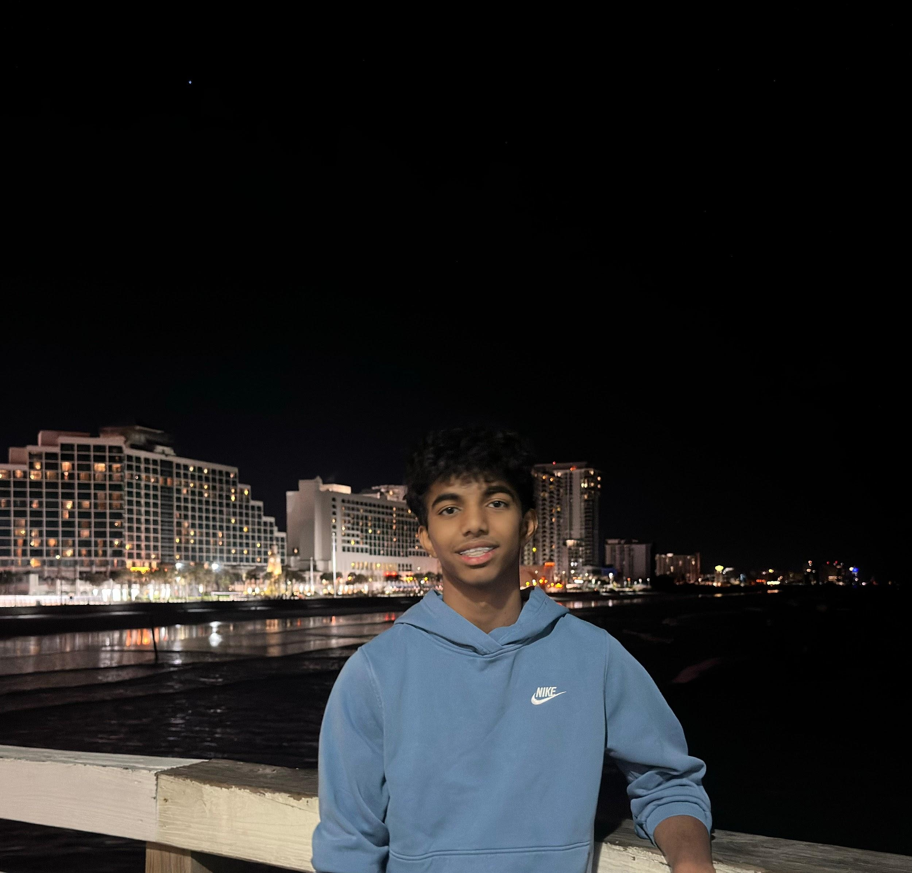

Anish Meruva
Charlotte, North Carolina Chapter President
Hi! My name is Anish Meruva, and I'm a rising sophomore from North Carolina. I'm passionate and excited about bringing people together and creating moments that make others feel seen, supported, and valued. A fun fact about me is that I've lived in North Carolina for 3 years.